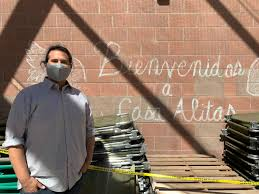

01 · Humanitarian response & trauma-informed care
Casa Alitas: a bridge from custody to community.
As executive director of migrant services, I helped lead one of the country’s largest humanitarian reception operations for people seeking asylum after release from federal custody. Our work was not simply to provide shelter—it was to create a safe, welcoming transition toward family reunification, onward travel, and everyday life.
That meant coordinating food, temporary shelter, information, referrals, volunteers, and partnerships across a rapidly changing environment while maintaining dignity and psychological safety at the center of the response.
- Led a $12 million humanitarian operation serving up to 1,800 people per night.
- Supported 62 staff members and more than 600 volunteers across multiple sites.
- Helped secure more than $13 million in public grants and philanthropic support.
- Strengthened coordination among local government, federal agencies, faith communities, and nonprofit organizations.
